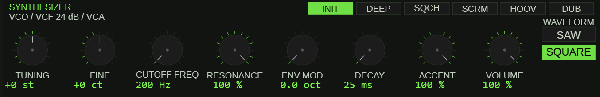
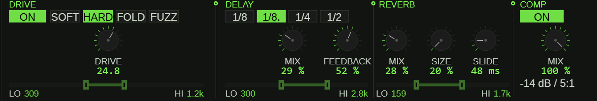
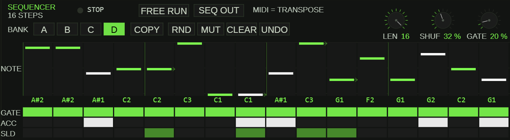
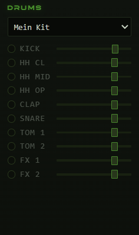

01Introduction
TT-303 Acid Machine is a browser-based recreation of the Roland TB-303, the single-oscillator bassline synthesizer whose squelchy, sliding lines defined the acid house sound. Alongside the faithful synth engine and its step sequencer, the app includes a small companion drum machine, so a complete acid groove can come together in a single browser tab.
Everything runs locally. The audio engine is built on the Web Audio API and an AudioWorklet, there is nothing to install, nothing is uploaded to a server, and all of your patterns and presets are stored in the browser's localStorage on your own device.
To use the app you need a current version of a modern browser (Chrome, Edge or Firefox) and a working audio output — speakers or headphones. Because browsers block audio until you interact with a page, the app opens behind a start overlay. One click on it unlocks the audio engine; until you do that, the app stays silent.
02Getting Started
Click the start button on the overlay. The interface appears with the transport bar along the top. Press the play button — or simply hit the spacebar — to start playback, and press it again to stop.
The tempo is set in the BPM field in the transport bar. It accepts values from 40 to 300 BPM; click the field, type a number, and the running pattern follows immediately. The sequencer and the drum machine both lock to this tempo, so one BPM value drives the whole groove.
03Two Modes: HOST and SEQ
The app has two fundamentally different ways of making sound, selected with the HOST/SEQ switch in the header.
In HOST mode, the app behaves like a regular MIDI instrument. Notes come from you — played on the computer keyboard or on an external MIDI keyboard — and the 303 voice responds directly, just as if it were a hardware module. The internal sequencer does not drive the synth in this mode. Use HOST mode to jam, to audition sounds while you tweak the knobs, or to play the app from a controller or a DAW.
In SEQ mode, the built-in step sequencer takes over. It plays the currently loaded pattern in a loop, in classic 303 fashion, while you shape the sound with the filter and effects. Pattern editing — notes, accents, slides — also happens here.
04The SYNTH Panel
The SYNTH panel holds the sound-shaping controls of the 303 voice. Most parameters are rotary knobs; the waveform is a two-position switch rather than a knob.

| Control | Range | What it does |
|---|---|---|
| Waveform | Sawtooth / Square | Selects the oscillator shape. Sawtooth is the brighter, more aggressive 303 staple; square is hollower and rounder. |
| Tuning | −24…+24 semitones | Coarse pitch offset, up to two octaves in either direction. |
| Fine | −50…+50 cents | Fine pitch adjustment for detuning against other instruments. |
| Cutoff Freq | 0–100 | Cutoff frequency of the classic 303-style lowpass filter. The single most performance-critical knob on the panel. |
| Resonance | 0–100 | Emphasis at the cutoff frequency — the nasal, whistling peak that makes the filter "squelch". |
| Env Mod | 0–100 | How strongly the note envelope sweeps the filter cutoff. This is the essence of the acid sound: each note opens the filter, then it falls shut. |
| Decay | 0–100 | How quickly the envelope (and the note) fades out. Short values give tight, percussive blips; long values let notes ring. |
| Accent | 0–100 | Intensity of the accent effect applied to accented steps — a louder, sharper, more filter-open hit. |
| Volume | 0–100 | Output level of the 303 voice. |
| Accent velocity threshold | 1–127 | Incoming MIDI velocity at or above which a note is treated as accented. Relevant when playing live in HOST mode. |
| Slide time | 0–300 ms | Duration of the portamento glide between notes that are tied together with a slide. |
Working with the knobs
All knobs share the same interaction model:
- Drag vertically to change the value — up increases, down decreases.
- Hold Shift while dragging for fine mode, which moves the value in small increments for precise settings.
- Scroll the mouse wheel over a knob to step the value in roughly 2% increments.
- Right-click or double-click a knob to reset it to its default value.
05Presets — Six Starting Points
The six buttons above the knobs — INIT, DEEP, SQCH, SCRM, HOOV and DUB — load built-in factory sounds instantly. They are starting points: pick the one closest to what you hear in your head, then adjust the knobs from there. Loading one never locks anything — every control remains fully editable, and your adjusted result can be stored as a user preset (see the preset section further below).
06The FX Panel
The FX panel contains a chain of four processors that the 303 signal passes through. Each can be toggled on or off independently.

Drive
A distortion stage with four selectable models — Soft, Hard, Fold and Fuzz — which range from gentle saturation to aggressive clipping and wave-folding. The Drive control sets the amount of distortion. The stage has its own 2-band EQ (Lowcut and Highcut, in Hz) so you can, for example, keep the low end clean while fuzzing the mids.
Delay
A tempo-synced echo. Mix sets the wet/dry balance in percent. The delay time is chosen from four note-value divisions relative to the current BPM: 1/8, dotted 1/8, 1/4 and 1/2 — the dotted eighth is the classic choice for rhythmic interest against straight 16th-note patterns. Feedback (0–90%) controls how many repeats you hear. A dedicated 2-band EQ shapes the echo tone.
Reverb
A room-style reverb with two main controls: Mix (percent wet) and Room Size (20–100%), which scales the virtual space from a small booth to a large hall. It also has its own 2-band EQ, which is useful for darkening the tail or keeping reverb out of the bass frequencies.
Compressor
A simple on/off compressor with a Mix control. Because it is a wet/dry mix rather than a hard insert, it works as parallel compression: at moderate settings it fattens the line without flattening the accents.
The EQ strips
Drive, Delay and Reverb each carry an identical EQ strip with two band edges — Lowcut and Highcut — covering 0 to 20,000 Hz. These are not numeric knobs: you set them by dragging directly inside the frequency-band display, left edge for the low cut, right edge for the high cut. The band between the two edges is what passes through that processor's EQ.
07The Sequencer (SEQ Panel)
The sequencer panel is only visible and active in SEQ mode. It is a 16-step sequencer in the spirit of the original, extended with pattern banks and editing tools.

Pattern banks and playback controls
- Banks A–D: four independent pattern memories. Switch banks at any time; the playing pattern changes accordingly.
- Pattern length: 1–16 steps. Shorter lengths loop the first steps only, which is handy for unusual meters.
- Shuffle: 0–75%. Delays every second 16th-note step to create swing; 0% is perfectly straight.
- Gate length: 10–100%. How long each step's note sustains relative to the step duration — short gates sound choppy, long gates sound legato.
- RUN indicator: highlights the step currently being played so you can follow the loop position visually.
- FREE RUN: lets the sequencer keep running independently of the main transport, useful for keeping a pattern cycling while you audition edits.
- SEQ OUT: sends the sequencer's internally generated notes out as external MIDI in addition to playing the internal synth (see the MIDI output section).
The step editor
Each step carries four editable properties, one row each:
- Note: the pitch of the step.
- Gate: on/off — whether the step sounds at all.
- Accent: on/off — whether the step triggers the accent effect.
- Slide: on/off — ties the step to the next one with a portamento glide instead of a new attack.
Clicking sets or toggles a value; clicking and dragging across a row "paints" the same setting onto several steps at once, which is the fastest way to lay out a run of accents or slides.
Pattern tools
- COPY — copies the current bank's pattern.
- RND — generates a random pattern, a quick source of new ideas.
- MUT — mutates the current pattern: small random variations on what you already have, rather than a fully random pattern.
- CLEAR — empties the current bank.
- UNDO — reverts the last editing action, so experimenting with RND, MUT or CLEAR is safe.
08Playing Live in HOST Mode
In HOST mode the computer keyboard becomes a two-octave piano. The mapping follows the German keyboard layout:
- Lower octave:
Y S X D C V G B H N J M— the letter keys are the white keys, the keys between them are the black keys. - Upper octave:
Q 2 W 3 E R 5 T 6 Z 7 U I 9 O 0 P— the same piano-style arrangement one octave up. - Arrow keys Up/Down: shift the keyboard range by octave.
- Shift or Ctrl while striking a key: plays the note accented — equivalent to hitting it with a velocity above the accent threshold.
- Right-click on the on-screen keyboard: gate/reset.
You can also plug in an external MIDI keyboard; the app uses the Web MIDI API to receive notes directly. The THRU switch forwards incoming MIDI notes to the selected MIDI output, so the app can sit inside a larger MIDI chain instead of terminating it.
09MIDI Output

The OUT dropdown in the transport bar selects an external MIDI destination — for example a hardware synthesizer on a USB/MIDI interface, or a DAW reached through a virtual MIDI bridge such as loopMIDI. The default setting is off, in which case nothing is sent.
Two switches decide what leaves the app once an output is chosen:
- SEQ OUT sends the notes generated by the built-in sequencer, so an external instrument can play your pattern in parallel with — or instead of — the internal synth.
- THRU passes notes arriving at the app's MIDI input straight through to the output.
The selected output is remembered in the browser and restored automatically on your next visit. Note that Web MIDI requires a browser that supports it, and the browser will ask for permission the first time — the app can only see your MIDI devices after you approve that dialog.
10The Drum Machine
Next to the 303 panel sits a small, self-contained drum machine. A dropdown selects the drum kit, and each sound in the kit has its own row with an on/off LED and a volume slider, so you can mute individual instruments and balance the kit against the bassline.
The drum machine runs independently of the 303 sequencer — it has its own pattern life — but it is locked to the same transport and the same BPM. Press play once and both start together in sync.

11Saving, Loading and Transferring Presets
The preset library controls sit in the transport bar, next to the play button (see the screenshot at the top of this guide): the name field, SAVE, the preset dropdown, ✕, ⇓ ALL and ⇑ ALL.
- SAVE: type a name into the name field and press SAVE to store the complete current state — SYNTH settings, FX settings and the current pattern — under that name.
- Preset dropdown: selecting an entry loads it immediately, no separate load button needed.
- ✕: deletes the preset currently selected in the dropdown.
- ⇓ ALL: exports your entire preset library plus the current session state as a single file and downloads it.
- ⇑ ALL: imports such a file back, overwriting or extending the local library.
One thing to keep in mind: everything is stored in the localStorage of this browser on this device. There is no account and no cloud sync. If you reinstall the browser, switch machines or simply want a backup of your sounds, use ⇓ ALL — the exported file is the only way to carry your library with you.
12Exporting Audio and MIDI
Two export buttons turn the currently loaded pattern into files:
- WAV·2B renders the pattern offline to a WAV audio file — two bars long — and downloads it. This is the fast way to get a printed loop for a DJ set, a sampler or a DAW arrangement.
- MID·2B exports the same pattern as a standard MIDI file, also two bars, ready to be dropped onto an instrument track in any DAW for further editing.
The WAV export contains only the 303 voice — the drum machine is not rendered into the file.
13Tips & Troubleshooting
No sound at all? First make sure you clicked the start overlay — browsers will not let the audio engine run without that click. Then check that the browser tab is in the foreground and not muted, that the site is not muted in the browser's tab menu, and that your system output is working.
Your MIDI device doesn't appear in the OUT dropdown? Confirm the browser supports Web MIDI and that you accepted the permission prompt. If the device was connected after the page loaded, or the permission state is unclear, restart the browser and reconnect the device.
Presets or settings disappeared after a browser reinstall, or they don't show up on your other computer? That is expected: localStorage is per browser and per device. Always export with ⇓ ALL before reinstalling, and use the exported file to move your library between machines.
The pattern sounds different from what you exported? Remember that the WAV render covers the 303 voice only. If you need the drums as audio, record the app output in real time instead of using the offline WAV export.